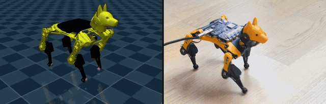
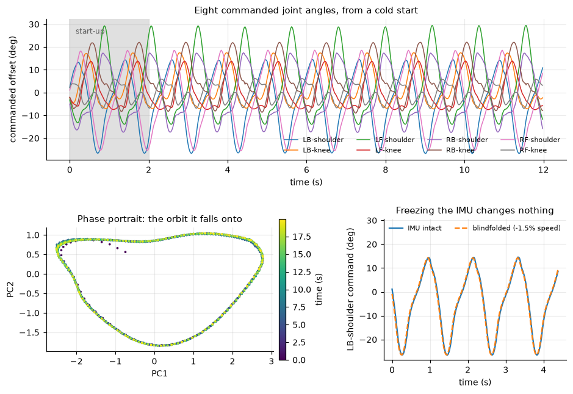
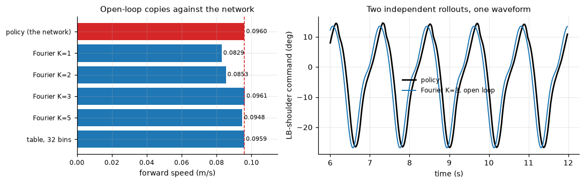

A complete pipeline for training a walking policy in MuJoCo and running it on a real Petoi Bittle X at 50 Hz: the simulation, the measured plant model, the firmware patches that cut command→motion latency from 198 ms to 54 ms, and a separate runtime that needs nothing but numpy and pyserial. A trained policy ships with the repo — you can watch it walk in about three minutes, with no robot at all.

No robot needed. This is the exact policy in deploy/policy/, running through
the exact observation pipeline, action latency and actuator model it was trained against.
$ git clone --recurse-submodules https://github.com/mike-grayhat/bittlejuice $ cd bittlejuice $ curl -LsSf https://astral.sh/uv/install.sh | sh # if you need uv $ uv sync # the shipped policy, in the simulator it was trained in $ uv run python sim/mj_eval.py -e shipped --video gait.mp4 $ uv run mjpython sim/mj_eval.py -e shipped
--video renders headless and works over SSH. Use mjpython for the
interactive viewer on macOS — it ships with the mujoco wheel and is already in .venv/bin;
on Linux, plain python opens the viewer.
$ uv run pytest # the invariants, ~10 s $ uv run python tools/mj_deployability.py -e shipped # will this gait survive real servos?
The second is the gate that decides whether a policy transfers at all. The shipped policy reads 2.6 % slew saturation against a 15 % threshold — see docs/training.md for why that number, and not the reward curve, is the one that matters.
Four entry points, in increasing order of effort. Each one is useful on its own, and each builds on the one above it.
Three properties of this robot drive nearly every design decision. Most of what looks strange in the codebase follows from them — and the consequence is that the interesting work is in the plant model, not the algorithm. The RL is ordinary PPO.
The firmware can infer one — detach the servo, turn the signal pin into an input, time a reply pulse — at roughly 20 ms a joint, with the leg limp for the duration. Against a loop that gets 20 ms per tick, that is not feedback.
So dof_pos and dof_vel are never measured. They are estimated,
by replaying the host's own commanded targets through a model of the servo's measured response —
and the simulator observes the same estimate rather than its own ground truth.
The firmware never prints angular rates. They are finite-differenced from the fused attitude stream, and that differentiation sets the noise floor the policy has to live with.
Everything downstream — observation scaling, the disturbance model, what the reward can reasonably ask for — is drawn against that floor rather than an ideal IMU.
A naive MuJoCo actuator is much faster than the real thing, and slews well past the measured 137 °/s ceiling. Train against that and the gait will not survive contact with hardware.
The filter and the actuator have to be fitted together, or the same lag gets counted
twice — which is exactly what test_actuator_dynamics.py pins.
Blindfold the policy — replace both IMU channels with a constant “upright and still” — and it barely notices. It loses 1.1 % of its speed, and 0.2 % on a 4° slope, the condition designed to catch a policy that reads gravity. The loop is closed in the plumbing and not in the policy: the robot is running a learned rhythm more than it is reacting to anything.
That is an open problem here, not a solved one. The most likely reason is that the policy almost never falls, so nothing ever selects for recovery. docs/training.md has what was tried and why it did not work — and the section below takes the claim as far as it goes: the whole network is reproduced by 56 numbers and a clock.
$ uv run python tools/blindfold_test.py -e shipped
Twenty-four of the thirty-three observation channels are the policy's own output handed
back to it — dof_pos and dof_vel replayed from commands the host already
sent, plus last_action. Of the nine that are not, three are the command, and this run
pinned two of them: lin_vel_x_range: [0.1, 0.1] and lin_vel_y_range: [0, 0]
were constants for all 5000 iterations. That leaves the yaw-rate channel, which the heading
controller writes each step from heading error, and the six IMU channels. Freeze those and what
remains is close to an autonomous dynamical system: the next action is largely a
fixed function of past actions. Such a system has three possible fates — a fixed point, a limit
cycle, or chaos. A walking gait is a limit cycle, and a limit cycle is a periodic function of one
scalar phase. Hence: a clock.


last_action — walks at
0.0961 m/s against the network's 0.0960, through the same actuator lag, the same 1° wire
quantisation and the same contact model. One sine per joint (24 floats) still walks, just slower
and with a wider lateral wobble.On the rough terrain the policy trained against — 12 mm heightfield, 4° slope, pushes, observation noise — three seeds put the two within noise of each other: the network averages 0.0724 m/s and falls twice on one seed, the clock averages 0.0786 m/s and does not fall. Three seeds is not a measurement, and that is the point of the open problem above: there is no evidence the network is using its sensors for anything the clock is missing.
Stock firmware cannot run this control loop — it ramps every pose command and caps the IMU
at 5 Hz. The patches add a runtime mode that is off at boot, so a flashed robot still
walks, dances and answers the app exactly as before until something asks. Flash with
tools/flash_firmware.py: it asks the robot what it is before writing anything, refuses a
mismatch, and dumps the whole flash to backups/ first, so a bad flash is one command to
undo. Then bring it up in stages. Every stage is a gate.
Does it talk, can it switch modes, and is the IMU stream at 250 Hz once it has?
$ uv run --directory deploy python -m bittle_io --port $PORT --run-id bringup probe
The whole policy path, with nothing reaching the servos.
$ uv run python deploy/control_loop.py --port $PORT --policy $POLICY --dry-run
Robot hanging, legs free. Stance pose only — no policy.
$ uv run python deploy/control_loop.py --port $PORT --policy $POLICY --hold
Still hanging. Five seconds at the commanded 0.10 m/s.
$ uv run python deploy/control_loop.py --port $PORT --policy $POLICY --command 0.10 0 0 --duration 5
Ten seconds, spotted the first time. The policy was trained at a fixed 0.10 m/s and the export
carries that range, so any other --command is clamped and the loop says so on stdout.
$ uv run python deploy/control_loop.py --port $PORT --policy $POLICY --command 0.10 0 0 --duration 10
The plant is the hardware it was fitted to. The measured plant model, the fitted servo response and the shipped policy all come from a Bittle X v2 with alloy-geared servos. Lighter plastic-geared servos and earlier revisions have their own torque and slew behaviour — read a bad gait there as a plant mismatch rather than a bad policy, and refit with docs/measuring.md. The prebuilt image on the releases page is Bittle X / BiBoard V1.0 / Rev D/E only; those are compile-time choices, so a different board needs its own build.
deploy/ deliberately depends on nothing but numpy and pyserial — no torch, no
mujoco — so it runs on limited hardware like a Pi. Copy that one directory to the robot; if you only
ever want to run a policy, that is your whole install.
sim/ training pipeline: config, plant, PPO entrypoints, export configs/ training recipes -- an objective extending a shared base deploy/ robot runtime -- numpy + pyserial only bittle_io/ the measured serial layer and characterization suite policy/ exported policies the robot can run tools/ diagnostics, one script per question tests/ invariants, asserted against sim/config.py model/ bittle.xml + meshes logs/shipped/ the checkpoint behind the shipped policy firmware/ submodule: the OpenCat fork, pinned to the patched branch measurements/ hardware captures; reference/ is a full patched session docs/ the long-form guides
The tests are not unit tests in the usual sense. They pin the places where sim and hardware
can silently disagree, and most of them exist because that disagreement actually happened. Run them
before believing anything: uv run pytest.
dof_pos/dof_vel estimate agrees bit for bit with what the deploy loop computestest_servo_observation.pya_t while the plant gets a_{t-k}test_latency_paths.py